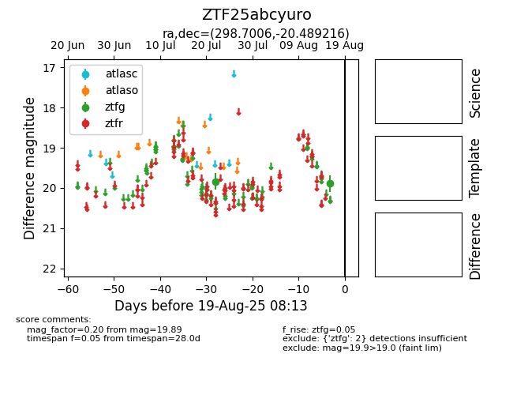

Target ZTF25abcyuro at 2025-08-05 23:02, see:
FINK: fink-portal.org/ZTF25abcyuro
Lasair: lasair-ztf.lsst.ac.uk/objects/ZTF25abcyuro
ALeRCE: alerce.online/object/ZTF25abcyuro
alt names
ZTF25abcyuro (ztf,fink)
coordinates:
equatorial (ra, dec) = (298.7006,-20.48922)
galactic (l, b) = (20.7265,-22.77918)
photometry
last ztfg=19.84
1 ztfg detections
